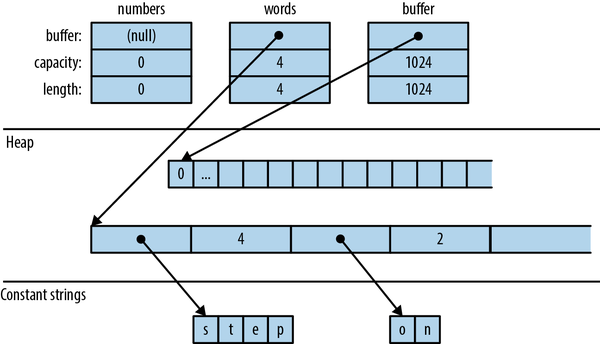
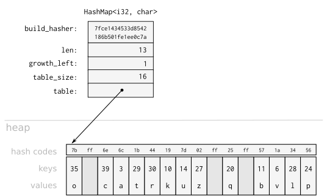

Chapter 16. Collections
We all behave like Maxwell’s demon. Organisms organize. In everyday experience lies the reason sober physicists across two centuries kept this cartoon fantasy alive. We sort the mail, build sand castles, solve jigsaw puzzles, separate wheat from chaff, rearrange chess pieces, collect stamps, alphabetize books, create symmetry, compose sonnets and sonatas, and put our rooms in order, and all this we do requires no great energy, as long as we can apply intelligence.
James Gleick, The Information: A History, a Theory, a Flood
The Rust standard library contains several collections, generic types for storing data in memory. We’ve already been using collections, such as Vec and HashMap, throughout this book. In this chapter, we’ll cover the methods of these two types in detail, along with the other half-dozen standard collections. Before we begin, let’s address a few systematic differences between Rust’s collections and those in other languages.
First, moves and borrowing are everywhere. Rust uses moves to avoid deep-copying values. That’s why the method Vec<T>::push(item) takes its argument by value, not by reference. The value is moved into the vector. The diagrams in Chapter 4 show how this works out in practice: pushing a Rust String to a Vec<String> is quick, because Rust doesn’t have to copy the string’s character data, and ownership of the string is always clear.
Second, Rust doesn’t have invalidation errors—the kind of dangling-pointer bug where a collection is resized, or otherwise changed, while the program is holding a pointer to data inside it. Invalidation errors are another source of undefined behavior in C++, and they cause the occasional ConcurrentModificationException even in memory-safe languages. Rust’s borrow checker rules them out at compile time.
Finally, Rust does not have null, so we’ll see Options in places where other languages would use null.
Apart from these differences, Rust’s collections are about what you’d expect. If you’re an experienced programmer in a hurry, you can skim here, but don’t miss “Entries”.
Overview
Table 16-1 shows Rust’s eight standard collections. All of them are generic types.
| Collection | Description | Similar collection type in... | ||
|---|---|---|---|---|
| C++ | Java | Python | ||
Vec<T> |
Growable array | vector |
ArrayList |
list |
VecDeque<T> |
Double-ended queue (growable ring buffer) |
deque |
ArrayDeque |
collections.deque |
LinkedList<T> |
Doubly linked list | list |
LinkedList |
— |
BinaryHeap<T>where T: Ord |
Max heap | priority_queue |
PriorityQueue |
heapq |
HashMap<K, V>where K: Eq + Hash |
Key-value hash table | unordered_map |
HashMap |
dict |
BTreeMap<K, V>where K: Ord |
Sorted key-value table | map |
TreeMap |
— |
HashSet<T>where T: Eq + Hash |
Unordered, hash-based set | unordered_set |
HashSet |
set |
BTreeSet<T>where T: Ord |
Sorted set | set |
TreeSet |
— |
Vec<T>, HashMap<K, V>, and HashSet<T> are the most generally useful collection types. The rest have niche uses. This chapter discusses each collection type in turn:
Vec<T>-
A growable, heap-allocated array of values of type
T. About half of this chapter is dedicated toVecand its many useful methods. VecDeque<T>-
Like
Vec<T>, but better for use as a first-in-first-out queue. It supports efficiently adding and removing values at the front of the list as well as the back. This comes at the cost of making all other operations slightly slower. BinaryHeap<T>-
A priority queue. The values in a
BinaryHeapare organized so that it’s always efficient to find and remove the maximum value. HashMap<K, V>-
A table of key-value pairs. Looking up a value by its key is fast. The entries are stored in an arbitrary order.
BTreeMap<K, V>-
Like
HashMap<K, V>, but it keeps the entries sorted by key. ABTreeMap<String, i32>stores its entries inStringcomparison order. Unless you need the entries to stay sorted, aHashMapis faster. HashSet<T>-
A set of values of type
T. Adding and removing values is fast, and it’s fast to ask whether a given value is in the set or not. BTreeSet<T>-
Like
HashSet<T>, but it keeps the elements sorted by value. Again, unless you need the data sorted, aHashSetis faster.
Because LinkedList is rarely used (and there are better alternatives, both in performance and interface, for most use cases), we do not describe it here.
Vec<T>
We’ll assume some familiarity with Vec, since we’ve been using it throughout the book. For an introduction, see “Vectors”. Here we’ll finally describe its methods and its inner workings in depth.
The easiest way to create a vector is to use the vec! macro:
// Create an empty vectorletmutnumbers:Vec<i32>=vec![];// Create a vector with given contentsletwords=vec!["step","on","no","pets"];letmutbuffer=vec![0u8;1024];// 1024 zeroed-out bytes
As described in Chapter 4, a vector has three fields: the length, the capacity, and a pointer to a heap allocation where the elements are stored. Figure 16-1 shows how the preceding vectors would appear in memory. The empty vector, numbers, initially has a capacity of 0. No heap memory is allocated for it until the first element is added.
Like all collections, Vec implements std::iter::FromIterator, so you can create a vector from any iterator using the iterator’s .collect() method, as described in “Building Collections: collect and FromIterator”:
// Convert another collection to a vector.letmy_vec=my_set.into_iter().collect::<Vec<String>>();

Figure 16-1. Vector layout in memory: each element of words is a &str value consisting of a pointer and a length
Accessing Elements
Getting elements of an array, slice, or vector by index is straightforward:
// Get a reference to an elementletfirst_line=&lines[0];// Get a copy of an elementletfifth_number=numbers[4];// requires Copyletsecond_line=lines[1].clone();// requires Clone// Get a reference to a sliceletmy_ref=&buffer[4..12];// Get a copy of a sliceletmy_copy=buffer[4..12].to_vec();// requires Clone
All of these forms panic if an index is out of bounds.
Rust is picky about numeric types, and it makes no exceptions for vectors. Vector lengths and indices are of type usize. Trying to use a u32, u64, or isize as a vector index is an error. You can use an n as usize cast to convert as needed; see “Type Casts”.
Several methods provide easy access to particular elements of a vector or slice (note that all slice methods are available on arrays and vectors too):
slice.first()-
Returns a reference to the first element of
slice, if any.The return type is
Option<&T>, so the return value isNoneifsliceis empty andSome(&slice[0])if it’s not empty:ifletSome(item)=v.first(){println!("We got one! {item}");} slice.last()slice.get(index)-
Returns
Somereference toslice[index], if it exists. Ifslicehas fewer thanindex+1elements, this returnsNone:letslice=[0,1,2,3];assert_eq!(slice.get(2),Some(&2));assert_eq!(slice.get(4),None); slice.first_mut(),slice.last_mut(),slice.get_mut(index)-
Variations of the preceding that borrow
mutreferences:letmutslice=[0,1,2,3];{letlast=slice.last_mut().unwrap();// type of last: &mut i32assert_eq!(*last,3);*last=100;}assert_eq!(slice,[0,1,2,100]);
Because returning a T by value would mean moving it, methods that access elements in place typically return those elements by reference.
An exception is the .to_vec() method, which makes copies:
Iteration
Vectors, arrays, and slices are iterable, either by value or by reference, following the pattern described in “IntoIterator Implementations”:
-
Iterating over a
Vec<T>or array[T; N]produces items of typeT. The elements are moved out of the vector or array one by one, consuming it. -
Iterating over a value of type
&[T; N],&[T], or&Vec<T>—that is, a reference to an array, slice, or vector—produces items of type&T, references to the individual elements, which are not moved. -
Iterating over a value of type
&mut [T; N],&mut [T], or&mut Vec<T>produces items of type&mut T.
Arrays, slices, and vectors also have .iter() and .iter_mut() methods (described in “iter and iter_mut Methods”) for creating iterators that produce references to their elements.
We’ll cover some fancier ways to iterate over a slice in “Splitting”.
Length and Capacity
The length of an array, slice, or vector is the number of elements it contains:
All of a vector’s elements are stored in a contiguous, heap-allocated chunk of memory. The capacity of a vector is the maximum number of elements that would fit in this chunk. Vec normally manages the capacity for you, automatically allocating a larger buffer and moving the elements into it when more space is needed. There are also a few methods for managing capacity explicitly:
Vec::with_capacity(n)vec.capacity()-
Returns
vec’s capacity, as ausize. It’s always true thatvec.capacity() >= vec.len(). vec.reserve(n)-
Makes sure the vector has at least enough spare capacity for
nmore elements: that is,vec.capacity()is at leastvec.len() + n. If there’s already enough room, this does nothing. If not, this allocates a larger buffer and moves the vector’s contents into it. vec.reserve_exact(n)-
Like
vec.reserve(n), but tellsvecnot to allocate any extra capacity for future growth, beyondn. Afterward,vec.capacity()is exactlyvec.len() + n. vec.try_reserve(n),vec.try_reserve_exact(n)-
Like
vec.reserve(n)andvec.reserve_exact(n), but returning aResult<(), TryReserveError>. As discussed in “Aborting”, memory allocation failures are rare, and Rust normally handles them by aborting the process. These methods return an error instead. They can be useful in code that allocates a potentially huge chunk of memory, such as a bitmap for a large image. vec.shrink_to_fit()-
Tries to free up the extra memory if
vec.capacity()is greater thanvec.len().
Growing and Shrinking Vectors
Vec<T> has many methods that add or remove elements, changing the vector’s length. Each of these takes its self argument by mut reference.
These two methods add or remove a single value at the end of a vector:
vec.push(value)vec.pop()-
Removes and returns the last element. The return type is
Option<T>. This returnsSome(x)if the popped element isxandNoneif the vector was already empty.
Note that .push() takes its argument by value, not by reference. Likewise, .pop() returns the popped value, not a reference. The same is true of most of the remaining methods in this section. They move values in and out of vectors.
These two methods add or remove a value anywhere in a vector:
vec.insert(index, value)-
Inserts the given
valueatvec[index], sliding any existing values invec[index..]one spot to the right to make room.Panics if
index > vec.len(). vec.remove(index)-
Removes and returns
vec[index], sliding any existing values invec[index+1..]one spot to the left to close the gap.Panics if
index >= vec.len(), since in that case there is no elementvec[index]to remove.The longer the vector, the slower this operation gets. If you find yourself doing
vec.remove(0)a lot, consider using aVecDeque(explained in “VecDeque<T>”) instead of aVec.
Both .insert() and .remove() are slower the more elements have to be shifted.
Four methods change the length of a vector to a specific value:
vec.resize(new_len, value)-
Sets
vec’s length tonew_len. If this increasesvec’s length, copies ofvalueare added to fill the new space. The element type must implement theClonetrait. vec.resize_with(new_len, closure)-
Just like
vec.resize, but calls the closure to construct each new element. It can be used with vectors of elements that are notClone. vec.truncate(new_len)-
Reduces the length of
vectonew_len, dropping any elements that were in the rangevec[new_len..].If
vec.len()is already less than or equal tonew_len, nothing happens. vec.clear()-
Removes all elements from
vec. It’s the same asvec.truncate(0).
Four methods add or remove many values at once:
vec.extend(iterable)-
Adds all items from the given
iterablevalue at the end ofvec, in order. It’s like a multivalue version of.push(). Theiterableargument can be anything that implementsIntoIterator<Item = T>.This method is so useful that there’s a standard trait for it, the
Extendtrait, which all standard collections implement. Unfortunately, this causesrustdocto lump.extend()with other trait methods in a big pile at the bottom of the generated HTML, so it’s hard to find when you need it. You just have to remember it’s there! See “The Extend Trait” for more. vec.split_off(index)-
Like
vec.truncate(index), except that it returns aVec<T>containing the values removed from the end ofvec. It’s like a multivalue version of.pop(). vec.append(&mut vec2)-
This moves all elements from
vec2intovec, wherevec2is another vector of typeVec<T>. Afterward,vec2is empty.This is like
vec.extend(vec2)except thatvec2still exists afterward, with its capacity unaffected. vec.drain(range)-
This removes the
rangevec[range]fromvecand returns an iterator over the removed elements, whererangeis a range value, like..or0..4.
There are also a few oddball methods for selectively removing some of a vector’s elements:
vec.retain(test)-
Removes all elements that don’t pass the given test. The
testargument is a function or closure that implementsFnMut(&T) -> bool. For each element ofvec, this callstest(&element), and if it returnsfalse, the element is removed from the vector and dropped.Apart from performance, this is like writing:
vec=vec.into_iter().filter(test).collect(); vec.dedup()-
Drops repeated elements. It’s like the Unix
uniqshell utility. It scansvecfor places where adjacent elements are equal and drops the extra equal values so that only one is left:letmutbyte_vec=b"Misssssssissippi".to_vec();byte_vec.dedup();assert_eq!(&byte_vec,b"Misisipi");Note that there are still two
's'characters in the output. This method only removes adjacent duplicates. To eliminate all duplicates, you have three options: sort the vector before calling.dedup(), move the data into a set, or (to keep the elements in their original order) use this.retain()trick:letmutbyte_vec=b"Misssssssissippi".to_vec();letmutseen=HashSet::new();byte_vec.retain(|r|seen.insert(*r));assert_eq!(&byte_vec,b"Misp");This works because
.insert()returnsfalsewhen the set already contains the item we’re inserting. vec.dedup_by(same)-
The same as
vec.dedup(), but it uses the function or closuresame(&mut elem1, &mut elem2), instead of the==operator, to check whether two elements should be considered equal. vec.dedup_by_key(key)-
The same as
vec.dedup(), but it treats two elements as equal ifkey(&mut elem1) == key(&mut elem2).For example, if
errorsis aVec<Box<dyn Error>>, you can write:// Remove errors with redundant messages.errors.dedup_by_key(|err|err.to_string());
Of all the methods covered in this section, only .resize() ever clones values. The others work by moving values from one place to another.
Splitting
It’s easy to get many non-mut references into an array, slice, or vector at once:
letv=vec![0,1,2,3];leta=&v[i];letb=&v[j];letmid=v.len()/2;letfront_half=&v[..mid];letback_half=&v[mid..];
Getting multiple mut references is not so easy:
letmutv=vec![0,1,2,3];leta=&mutv[i];letb=&mutv[j];// error: cannot borrow `v` as mutable// more than once at a time*a=6;// references `a` and `b` get used here,*b=7;// so their lifetimes must overlap
Rust forbids this because if i == j, then a and b would be two mut references to the same integer, in violation of Rust’s safety rules. (See “Sharing Versus Mutation”.)
Rust has several methods that can borrow mut references to two or more parts of an array, slice, or vector at once. Unlike the preceding code, these methods are safe, because by design, they always split the data into nonoverlapping regions. Many of these methods are also handy for working with non-mut slices, so there are mut and non-mut versions of each.
Figure 16-2 illustrates these methods.

Figure 16-2. Splitting methods illustrated. The little rectangle in the output of slice.split() is an empty slice caused by the two adjacent separators. Note that rsplitn and rchunks produce their output in reverse order.
None of these methods directly modifies an array, slice, or vector; they merely return new references to parts of the data inside:
slice.iter(),slice.iter_mut()-
Produce a reference to each element of
slice. We covered them in “Iteration”. slice.split_at(index),slice.split_at_mut(index)-
Break a slice in two, returning a pair.
slice.split_at(index)is equivalent to(&slice[..index], &slice[index..]). These methods panic ifindexis out of bounds. slice.split_first(),slice.split_first_mut()-
Also return a pair: a reference to the first element (
slice[0]) and a slice reference to all the rest (slice[1..]).The return type of
.split_first()isOption<(&T, &[T])>; the result isNoneifsliceis empty. slice.split_last(),slice.split_last_mut()-
These are analogous but split off the last element rather than the first.
The return type of
.split_last()isOption<(&T, &[T])>. slice.split(is_sep),slice.split_mut(is_sep)-
Split
sliceinto one or more subslices, using the function or closureis_septo figure out where to split. They return an iterator over the subslices.As you consume the iterator, it calls
is_sep(&element)for each element in the slice. Ifis_sep(&element)istrue, the element is a separator. Separators are not included in any output subslice.The output always contains at least one subslice, plus one per separator. Empty subslices are included whenever separators appear adjacent to each other or to the ends of
slice. slice.split_inclusive(is_sep),slice.split_inclusive_mut(is_sep)-
These work just like
splitandsplit_mut, but include the separator at the end of the previous subslice rather than excluding it. slice.rsplit(is_sep),slice.rsplit_mut(is_sep)-
Just like
splitandsplit_mut, but start at the end of the slice. slice.splitn(n, is_sep),slice.splitn_mut(n, is_sep)-
The same but they produce at most
nsubslices. After the firstn-1slices are found,is_sepis not called again. The last subslice contains all the remaining elements. slice.rsplitn(n, is_sep),slice.rsplitn_mut(n, is_sep)-
Just like
.splitn()and.splitn_mut()except that the slice is scanned in reverse order. That is, these methods split on the lastn-1separators in the slice, rather than the first, and the subslices are produced starting from the end. slice.chunks(n),slice.chunks_mut(n)-
Return an iterator over nonoverlapping subslices of length
n. Ifndoesn’t divideslice.len()exactly, the last chunk will contain fewer thannelements. slice.rchunks(n),slice.rchunks_mut(n)-
Just like
slice.chunksandslice.chunks_mut, but start at the end of the slice. slice.chunks_exact(n),slice.chunks_exact_mut(n)-
Return an iterator over nonoverlapping subslices of length
n. Ifndoesn’t divideslice.len(), the last chunk (with less thannelements) is available in the result’sremainder()method. slice.rchunks_exact(n),slice.rchunks_exact_mut(n)-
Just like
slice.chunks_exactandslice.chunks_exact_mut, but start at the end of the slice.
There’s one more method for iterating over subslices:
slice.windows(n)-
Returns an iterator that behaves like a “sliding window” over the data in
slice. It produces subslices that spannconsecutive elements ofslice. The first value produced is&slice[0..n], the second is&slice[1..n+1], and so on.If
nis greater than the length ofslice, then no slices are produced. Ifnis 0, the method panics.For example, if
days.len() == 31, then we can produce all seven-day spans indaysby callingdays.windows(7).A sliding window of size 2 is handy for exploring how a data series changes from one data point to the next:
letchanges=daily_high_temperatures.windows(2)// get adjacent days' temps.map(|w|w[1]-w[0])// how much did it change?.collect::<Vec<_>>();Because the subslices overlap, there is no variation of this method that returns
mutreferences.
If none of the above slice methods elegantly produces the non-overlapping mut references you’re after, there is one last tool in the box:
slice.get_disjoint_mut([i, j, ...])-
Gets
mutreferences to the specified elements ofslice. This returns aResult; it’s an error if any indices are out of bounds, or if any two are equal.For example, in the dark academia adventure Poet and Villain, we have this code simulating literary combat:
let[attacker,defender]=poets.get_disjoint_mut([att_id,def_id])?;defender.confidence-=attacker.prestige;defender.check_for_death();Here,
poetsis a&mut Vec<Poet>, soget_disjoint_mutreturns aResult<[&mut Poet; 2], GetDisjointMutError>. This code would return an error if the player were to attack their own poetry.You can pass an array of any number of
usizevalues toget_disjoint_mut; it returns an array of the same number of references. It can also take an array of ranges, returning an error if any overlap and an array of&mut [T]slices on success.
Filling
There are two convenience methods for replacing the contents of mutable slices:
slice.fill(value)-
Fills the slice with clones of
value. The most common use is to zero out part of a buffer. slice.fill_with(function)-
Fills the slice with values made by calling the given function with no arguments. This can be useful when the element type is not
Clone. It’s also handy for generating values:buf.fill_with(rand::random).
Sorting and Searching
Slices offer three methods for sorting:
slice.sort()-
Sorts the elements into increasing order. This method is present only when the element type implements
Ord. slice.sort_by(cmp)-
Sorts the elements of
sliceusing a function or closurecmpto specify the sort order.cmpmust implementFn(&T, &T) -> std::cmp::Ordering.Hand-implementing
cmpis a pain, unless you delegate to a.cmp()method:students.sort_by(|a,b|a.last_name.cmp(&b.last_name));To sort by one field, using a second field as a tiebreaker, compare tuples:
students.sort_by(|a,b|{leta_key=(&a.last_name,&a.first_name);letb_key=(&b.last_name,&b.first_name);a_key.cmp(&b_key)});Floating-point types don’t implement
Ord, so they do not have a.cmp()method. Use.total_cmp()instead:students.sort_by(|a,b|a.average_grade().total_cmp(&b.average_grade()));This method puts all floating-point values in a deterministic order, even NaN values—although in this example it seems best to make sure
average_gradealways returns a real number. slice.sort_by_key(key)-
Sorts the elements of
sliceinto increasing order by a sort key, given by the function or closurekey:racers.sort_by_key(|r|r.finish_time);// fastest firstracers.sort_by_key(|r|r.team_id);// or, sort teammates togetherThe key function must implement
Fn(&T) -> KwhereK: Ord. Note that these sort-key values are not cached during sorting, so the key function will typically be called several times per element.For technical reasons,
key(element)can’t return any references borrowed from the element. This won’t work:racers.sort_by_key(|r|&r.last_name);// error: can't infer lifetimeBut in these cases, it’s easy enough to fall back on
.sort_by().The wrapper type
std::cmp::Reverse<T>can be used as a sort key to reverse the usual sort order. For any typeTthat implementsOrd,Reverse<T>implementsOrdtoo, but with reversed ordering. For example, to list the highest-scoring players first:usestd::cmp::Reverse;players.sort_by_key(|p|Reverse(p.points));To add a tiebreaker, in case two players scored the same number of points, use a tuple as the sort key:
players.sort_by_key(|p|(Reverse(p.points),Reverse(p.rebounds)));Since floating-point types don’t implement
Ord, they can’t be used directly as sort keys. Use theOrderedFloatwrapper type from theordered-floatcrate instead:useordered_float::OrderedFloat;players.sort_by_key(|p|Reverse(OrderedFloat(p.fg_percent)));
All three methods perform a stable sort: they do not reorder elements that are considered equal in your chosen sort order. The corresponding methods sort_unstable, sort_unstable_by, and sort_unstable_by_key are typically a bit faster, but reorder equal elements arbitrarily.
To sort in reverse order, you can use sort_by with a cmp closure that swaps the two arguments. Taking arguments |b, a| rather than |a, b| effectively produces the opposite order. Or, you can just call the .reverse() method after sorting:
The boolean methods slice.is_sorted(), .is_sorted_by(cmp), and .is_sorted_by_key(key) return true if the elements of a slice are in the specified order.
Once a slice is sorted, it can be efficiently searched:
slice.binary_search(&value),slice.binary_search_by(&value, cmp),slice.binary_search_by_key(&value, key)-
All search for
valuein the given sortedslice. Note thatvalueis passed by reference.The return type of these methods is
Result<usize, usize>. They returnOk(index)ifslice[index]equalsvalueunder the specified sort order. If there is no such index, then they returnErr(insertion_point)such that insertingvalueatinsertion_pointwould preserve the order. slice.partition_point(p)-
This method can perform a binary search in
sliceeven when you don’t have a value of the right type forbinary_search. The predicateptakes a reference to an element and returns a boolean. Theslicemust be arranged so thatp(slice[x])returnstruefor all elements at the front of the slice, up to some cutoff point, andfalsefor all elements after that. Thenpartition_pointuses a binary search to find and return the cutoff point—that is, the number of elements in the front part, which satisfy the predicate.For example,
computers.partition_point(|c| c.price <= 2000)finds the index of the first computer with a price over2000, if the computers are sorted by price.
Of course, a binary search only works if the slice is in fact sorted in the specified order. Otherwise, the results are arbitrary—garbage in, garbage out.
Since f32 and f64 have NaN values, they do not implement Ord and can’t be used directly as keys with the sorting and binary search methods. To get similar methods that work on floating-point data, use the ord_subset crate.
There’s one method for searching a vector that is not sorted:
slice.contains(&value)-
Returns
trueif any element ofsliceis equal tovalue. This simply checks each element of the slice until a match is found. Again,valueis passed by reference.
To find the location of a value in a slice, like array.indexOf(value) in JavaScript, use an iterator:
slice.iter().position(|x|*x==value)
This returns an Option<usize>.
Comparing Slices
If a type T supports the == and != operators (the PartialEq trait, described in “Equivalence Comparisons”), then arrays [T; N], slices [T], and vectors Vec<T> support them too. Two slices are equal if they’re the same length and their corresponding elements are equal. The same goes for arrays and vectors.
If T supports the operators <, <=, >, and >= (the PartialOrd trait, described in “Ordered Comparisons”), then arrays, slices, and vectors of T do too. Slice comparisons are lexicographical.
Two convenience methods perform common slice comparisons:
slice.starts_with(other)-
Returns
trueifslicestarts with a sequence of values that are equal to the elements of the sliceother:assert_eq!([1,2,3,4].starts_with(&[1,2]),true);assert_eq!([1,2,3,4].starts_with(&[2,3]),false); slice.ends_with(other)-
Similar but checks the end of
slice:assert_eq!([1,2,3,4].ends_with(&[3,4]),true);
Random Elements
Random numbers are not built into the Rust standard library. The rand crate, which provides them, offers these two methods for getting random output from an array, slice, or vector:
slice.choose(&mut rng)-
Returns a reference to a random element of a slice. Like
slice.first()andslice.last(), this returns anOption<&T>that isNoneonly if the slice is empty. slice.shuffle(&mut rng)-
Randomly reorders the elements of a slice in place. The slice must be passed by
mutreference.
These are methods of the rand::seq::SliceRandom trait, which is implemented for all slices. To call these methods, you need a Rng, a random number generator. Fortunately, it’s easy to get one by calling rand::rng(). To shuffle the vector my_vec, we can write:
userand::seq::SliceRandom;my_vec.shuffle(&mutrand::rng());
Rust Rules Out Invalidation Errors
Most mainstream programming languages have collections and iterators, and they all have some variation on this rule: don’t modify a collection while you’re iterating over it. For example, the Python equivalent of a vector is a list:
my_list=[1,3,5,7,9]
Suppose we try to remove all values greater than 4 from my_list:
forindex,valinenumerate(my_list):ifval>4:delmy_list[index]# bug: modifying list while iterating(my_list)
(The enumerate function is Python’s equivalent of Rust’s .enumerate() method, described in “enumerate”.)
This program, surprisingly, prints [1, 3, 7]. But seven is greater than four. How did that slip through? This is an invalidation error: the program modifies data while iterating over it, invalidating the iterator. In Java, the result would be an exception; in C++ it is undefined behavior. In Python, while the behavior is well-defined, it’s unintuitive: the iterator skips an element. val is never 7.
Let’s try to reproduce this bug in Rust:
fnmain(){letmutmy_vec=vec![1,3,5,7,9];for(index,&val)inmy_vec.iter().enumerate(){ifval>4{my_vec.remove(index);// error: can't borrow `my_vec` as mutable}}println!("{my_vec:?}");}
Naturally, Rust rejects this program at compile time. When we call my_vec.iter(), it borrows a shared (non-mut) reference to the vector. The reference lives as long as the iterator, to the end of the for loop. We can’t modify the vector by calling my_vec.remove(index) while a non-mut reference exists.
Having an error pointed out to you is nice, but of course, you still need to find a way to get the desired behavior! The easiest fix here is to write:
my_vec.retain(|&val|val<=4);
Or, you can do what you’d do in Python or any other language: create a new vector using a filter.
VecDeque<T>
Vec supports efficiently adding and removing elements only at the end. When a program needs a place to store values that are “waiting in line,” Vec can be slow.
Rust’s std::collections::VecDeque<T> is a deque (pronounced “deck”), a double-ended queue. It supports efficient add and remove operations at both the front and the back:
deque.push_front(value)deque.push_back(value)-
Adds a value at the end. (This method is used much more than
.push_front(), because the usual convention for queues is that values are added at the back and removed at the front, like people waiting in a line.) deque.pop_front()-
Removes and returns the front value of the queue, returning an
Option<T>that isNoneif the queue is empty, likevec.pop(). deque.pop_back()-
Removes and returns the value at the back, again returning an
Option<T>. deque.front(),deque.back()-
Work like
vec.first()andvec.last(). They return a reference to the front or back element of the queue. The return value is anOption<&T>that isNoneif the queue is empty. deque.front_mut(),deque.back_mut()-
Work like
vec.first_mut()andvec.last_mut(), returningOption<&mut T>.
The implementation of VecDeque is a ring buffer, as shown in Figure 16-3.
Like a Vec, it has a single heap allocation where elements are stored. Unlike Vec, the data does not always start at the beginning of this region, and it can “wrap around” the end, as shown. The elements of this deque, in order, are ['A', 'B', 'C', 'D', 'E']. VecDeque has private fields, labeled start and stop in the figure, that it uses to remember where in the buffer the data begins and ends.
Adding a value to the queue, on either end, means claiming one of the unused slots, illustrated as the darker blocks, wrapping around or allocating a bigger chunk of memory if needed.
VecDeque manages wrapping, so you don’t have to think about it. Figure 16-3 is a behind-the-scenes view of how Rust makes .pop_front() fast.

Figure 16-3. How a VecDeque is stored in memory
Oftentimes, when you need a deque, .push_back() and .pop_front() are the only two methods that you’ll need. The associated functions VecDeque::new() and VecDeque::with_capacity(n), for creating queues, are just like their counterparts in Vec. Many Vec methods are also implemented for VecDeque: .len() and .is_empty(), .insert(index, value), .remove(index), .extend(iterable), and so on.
Deques, like vectors, can be iterated by value, by shared reference, or by mut reference. They have the three iterator methods .into_iter(), .iter(), and .iter_mut(). They can be indexed in the usual way: deque[index].
Because deques don’t store their elements contiguously in memory, they can’t inherit all the methods of slices. But if you’re willing to pay the cost of shifting the contents around, VecDeque provides a method that will fix that:
deque.make_contiguous()-
Takes
&mut selfand rearranges theVecDequeinto contiguous memory, returning&mut [T].
Vecs and VecDeques are closely related, and the standard library provides two trait implementations for easily converting between the two:
Vec::from(deque)-
Vec<T>implementsFrom<VecDeque<T>>, so this turns a deque into a vector. This costs O(n) time, since it may require rearranging the elements. VecDeque::from(vec)-
VecDeque<T>implementsFrom<Vec<T>>, so this turns a vector into a deque. This is also O(n), but it’s usually fast, even if the vector is large, because the vector’s heap allocation can simply be moved to the new deque.This method makes it easy to create a deque with specified elements, even though there is no standard
vec_deque![]macro:usestd::collections::VecDeque;letv=VecDeque::from(vec![1,2,3,4]);
BinaryHeap<T>
A BinaryHeap is a collection whose elements are kept loosely organized so that the greatest value always bubbles up to the front of the queue. Here are the three most commonly used BinaryHeap methods:
heap.push(value)heap.pop()-
Removes and returns the greatest value from the heap. It returns an
Option<T>that isNoneif the heap was empty. heap.peek()-
Returns a reference to the greatest value in the heap. The return type is
Option<&T>. heap.peek_mut()-
Returns a
PeekMut<T>, which acts as a mutable reference to the greatest value in the heap and provides the associated functionpop()to pop this value from the heap. Using this method, we can choose to pop or not pop from the heap based on the maximum value:usestd::collections::binary_heap::PeekMut;ifletSome(top)=heap.peek_mut(){if*top>10{PeekMut::pop(top);}}
BinaryHeap also supports a subset of the methods on Vec, including BinaryHeap::new(), .len(), .is_empty(), .capacity(), .clear(), and .append(&mut heap2).
For example, suppose we populate a BinaryHeap with a bunch of numbers:
usestd::collections::BinaryHeap;letmutheap=BinaryHeap::from(vec![2,3,8,6,9,5,4]);
The value 9 is at the top of the heap:
assert_eq!(heap.peek(),Some(&9));assert_eq!(heap.pop(),Some(9));
Removing the value 9 also rearranges the other elements slightly so that 8 is now at the front, and so on:
assert_eq!(heap.pop(),Some(8));assert_eq!(heap.pop(),Some(6));assert_eq!(heap.pop(),Some(5));...
Of course, BinaryHeap is not limited to numbers. It can hold any type of value that implements the Ord built-in trait.
This makes BinaryHeap useful as a work queue. You can define a task struct that implements Ord on the basis of priority so that higher-priority tasks are Greater than lower-priority tasks. Then, create a BinaryHeap to hold all pending tasks. Its .pop() method will always return the most important item, the task your program should work on next.
Note: BinaryHeap is iterable, and it has an .iter() method, but the iterators produce the heap’s elements in an arbitrary order, not from greatest to least. To consume values from a BinaryHeap in order of priority, use a while loop:
whileletSome(task)=heap.pop(){handle(task);}
HashMap<K, V> and BTreeMap<K, V>
A map is a collection of key-value pairs (called entries). No two entries have the same key, and the entries are kept organized so that if you have a key, you can efficiently look up the corresponding value in a map. In short, a map is a lookup table.
Rust offers two map types: HashMap<K, V> and BTreeMap<K, V>. The two share many of the same methods; the difference is in how the two keep entries arranged for fast lookup.
A HashMap stores the keys and values in a hash table, so it requires a key type K that implements Hash and Eq, the standard traits for hashing and equality.
Figure 16-4 shows how a HashMap is arranged in memory. All keys, values, and cached hash code bits are stored in a single heap-allocated table. Adding entries eventually forces the HashMap to allocate a larger table and move all the data into it. The implementation is based on Google’s brilliant SwissTable. If the picture does not look like hash table diagrams you’ve seen before, using fewer allocations or a density of entries that seems unlikely, this is why. We regret not having room to describe SwissTable in detail here; see Matt Kulukundis’s talk at CppCon 2017 for a full explanation.
The build_hasher field is explained in further detail in “Using a Custom Hashing Algorithm”.

Figure 16-4. A HashMap in memory
A BTreeMap stores the entries in order by key, in a tree structure, so it requires a key type K that implements Ord. Figure 16-5 shows a BTreeMap. Again, the darker regions are unused spare capacity.
A BTreeMap stores its entries in nodes. Most nodes in a BTreeMap contain only key-value pairs. Nonleaf nodes, like the root node shown in this figure, also have room for pointers to child nodes. The pointer between (20, 'q') and (30, 'r') points to a child node containing keys between 20 and 30. Adding entries often requires sliding some of a node’s existing entries to the right, to keep them sorted, and occasionally involves allocating new nodes.
This picture is a bit simplified to fit on the page. For example, real BTreeMap nodes have room for 11 entries, not 4.

Figure 16-5. A BTreeMap in memory
The Rust standard library uses B-trees rather than balanced binary trees because B-trees are faster on modern hardware. A binary tree may use fewer comparisons per search than a B-tree, but searching a B-tree has better locality—that is, the memory accesses are grouped together rather than scattered across the whole heap. This makes CPU cache misses rarer. It’s a significant speed boost.
There are several ways to create a map:
HashMap::new(),BTreeMap::new()-
Create new, empty maps.
iter.collect()-
Can be used to create and populate a new
HashMaporBTreeMapfrom key-value pairs.itermust be anIterator<Item = (K, V)>. HashMap::with_capacity(n)-
Creates a new, empty hash map with room for at least n entries.
HashMaps, like vectors, store their data in a single heap allocation, so they have a capacity and the related methodshash_map.capacity(),hash_map.reserve(additional), andhash_map.shrink_to_fit().BTreeMaps do not.
HashMaps and BTreeMaps have the same core methods for working with keys and values:
map.len()map.is_empty()map.contains_key(&key)map.get(&key)-
Searches
mapfor an entry with the givenkey. If a matching entry is found, this returnsSome(r), whereris a reference to the corresponding value. Otherwise, this returnsNone. map.get_mut(&key)-
Similar, but it returns a
mutreference to the value.In general, maps let you have
mutaccess to the values stored inside them, but not the keys. The values are yours to modify however you like. The keys belong to the map itself; it needs to ensure that they don’t change, because the entries are organized by their keys. Modifying a key in-place would be a bug. map.insert(key, value)-
Inserts the entry
(key, value)intomapand returns the old value, if any. The return type isOption<V>. If there’s already an entry forkeyin the map, the newly insertedvalueoverwrites the old one. map.extend(iterable)-
Iterates over the
(K, V)items ofiterableand inserts each of those key-value pairs intomap. map.append(&mut map2)-
Moves all entries from
map2intomap. Afterward,map2is empty. map.remove(&key)-
Finds and removes any entry with the given
keyfrommap, returning the removed value, if any. The return type isOption<V>. map.remove_entry(&key)-
Finds and removes any entry with the given
keyfrommap, returning the removed key and value, if any. The return type isOption<(K, V)>. map.retain(test)-
Removes all elements that don’t pass the given test. The
testargument is a function or closure that implementsFnMut(&K, &mut V) -> bool. For each element ofmap, this callstest(&key, &mut value), and if it returnsfalse, the element is removed from the map and dropped.Apart from performance, this is like writing:
map=map.into_iter().filter(test).collect(); map.clear()
A map can also be queried using square brackets: map[&key]. That is, maps implement the Index built-in trait. However, this panics if there is not already an entry for the given key, like an out-of-bounds array access, so use this syntax only if the entry you’re looking up is sure to be populated.
The key argument to .contains_key(), .get(), .get_mut(), and .remove() does not have to have the exact type &K. These methods are generic over types that can be borrowed from K. It’s OK to call fish_map.contains_key("conger") on a HashMap<String, Fish>, even though "conger" isn’t exactly a String, because String implements Borrow<str>. For details, see “Borrow and BorrowMut”.
Because a BTreeMap<K, V> keeps its entries sorted by key, it supports an additional operation:
btree_map.split_off(&key)-
Splits
btree_mapin two. Entries with keys less thankeyare left inbtree_map. Returns a newBTreeMap<K, V>containing the other entries.
Entries
Both HashMap and BTreeMap have a corresponding Entry type. The point of entries is to eliminate redundant map lookups. For example, here’s some code to get or create a student record:
// Do we already have a record for this student?if!student_map.contains_key(name){// No: create one.student_map.insert(name.to_string(),Student::new());}// Now a record definitely exists.letrecord=student_map.get_mut(name).unwrap();...
This works fine, but it accesses student_map two or three times, doing the same lookup each time.
The idea with entries is that we do the lookup just once, producing an Entry value that is then used for all subsequent operations. This one-liner is equivalent to all the preceding code, except that it does the lookup only once:
letrecord=student_map.entry(name.to_string()).or_insert_with(Student::new);
The Entry value returned by student_map.entry(name.to_string()) acts like a mutable reference to a place within the map that’s either occupied by a key-value pair, or vacant, meaning there’s no entry there yet. If vacant, the entry’s .or_insert_with() method inserts a new Student. Most uses of entries are like this: short and sweet.
All Entry values are created by the same method:
map.entry(key)-
Returns an
Entryfor the givenkey. If there’s no such key in the map, this returns a vacantEntry.This method takes its
selfargument bymutreference and returns anEntrywith a matching lifetime:pubfnentry<'a>(&'amutself,key:K)->Entry<'a,K,V>The
Entrytype has a lifetime parameter'abecause it’s effectively a fancy kind of borrowedmutreference to the map. As long as theEntryexists, it has exclusive access to the map.Back in “Structs Containing References”, we saw how to store references in a type and how that affects lifetimes. Now we’re seeing what that looks like from a user’s perspective. That’s what’s going on with
Entry.Unfortunately, it is not possible to pass a reference of type
&strto this method if the map hasStringkeys. The.entry()method, in that case, requires a realString.
Entry values provide three methods to deal with vacant entries:
map.entry(key).or_insert(value)-
Ensures that
mapcontains an entry with the givenkey, inserting a new entry with the givenvalueif needed. It returns amutreference to the new or existing value.Suppose we need to count votes. We can write:
letmutvote_counts:HashMap<String,usize>=HashMap::new();fornameinballots{letcount=vote_counts.entry(name).or_insert(0);*count+=1;}.or_insert()returns amutreference, so the type ofcountis&mut usize. map.entry(key).or_default()-
Ensures that
mapcontains an entry with the given key, inserting a new entry with the value returned byDefault::default()if needed. This only works for types that implementDefault. Likeor_insert, this method returns amutreference to the new or existing value. map.entry(key).or_insert_with(default_fn)-
This is the same, except that if it needs to create a new entry, it calls
default_fn()to produce the default value. If there’s already an entry forkeyin themap, thendefault_fnis not used.Suppose we want to know which words appear in which files. We can write:
// This map contains, for each word, the set of files it appears in.letmutword_occurrence:HashMap<String,HashSet<String>>=HashMap::new();forfileinfiles{forwordinread_words(file)?{letset=word_occurrence.entry(word).or_insert_with(HashSet::new);set.insert(file.clone());}}
Entry also provides a convenient way to modify only extant fields.
map.entry(key).and_modify(closure)-
Calls
closureif an entry with the keykeyexists, passing in a mutable reference to the value. It returns theEntry, so it can be chained with other methods.For instance, we could use this to count the number of occurrences of words in a string:
// This map contains all the words in a given string,// along with the number of times they occur.letmutword_frequency:HashMap<&str,u32>=HashMap::new();forcintext.split_whitespace(){word_frequency.entry(c).and_modify(|count|*count+=1).or_insert(1);}
The Entry type is an enum, defined like this for HashMap (and similarly for BTreeMap):
// (in std::collections::hash_map)pubenumEntry<'a,K,V>{Occupied(OccupiedEntry<'a,K,V>),Vacant(VacantEntry<'a,K,V>),}
The OccupiedEntry and VacantEntry types have methods for inserting, removing, and accessing entries without repeating the initial lookup. You can find them in the online documentation. The extra methods can occasionally be used to eliminate a redundant lookup or two, but .or_insert() and .or_insert_with() cover the common cases.
Map Iteration
There are several ways to iterate over a map:
-
Iterating by value (
for (k, v) in map) produces(K, V)pairs. This consumes the map. -
Iterating over a shared reference (
for (k, v) in &map) produces(&K, &V)pairs. -
Iterating over a
mutreference (for (k, v) in &mut map) produces(&K, &mut V)pairs. (Again, there’s no way to getmutaccess to keys stored in a map, because the entries are organized by their keys.)
Like vectors, maps have .iter() and .iter_mut() methods that return by-reference iterators, just like iterating over &map or &mut map. In addition:
map.keys()map.values()map.values_mut()map.into_iter(),map.into_keys(),map.into_values()-
Consume the map, returning an iterator over tuples
(K, V)of keys and values, keys, or values, respectively.
All HashMap iterators visit the map’s entries in an arbitrary order. BTreeMap iterators visit them in order by key.
HashSet<T> and BTreeSet<T>
Sets are collections of values arranged for fast membership testing:
letb1=large_vector.contains(&"needle");// slow, checks every elementletb2=large_hash_set.contains(&"needle");// fast, hash lookup
A set never contains multiple copies of the same value.
Maps and sets have different methods, but behind the scenes, a set is like a map with only keys, rather than key-value pairs. In fact, Rust’s two set types, HashSet<T> and BTreeSet<T>, are implemented as thin wrappers around HashMap<T, ()> and BTreeMap<T, ()>.
HashSet::new(),BTreeSet::new()iter.collect()-
Can be used to create a new set from any iterator. If
iterproduces any values more than once, the duplicates are dropped. HashSet::with_capacity(n)
HashSet<T> and BTreeSet<T> have all the basic methods in common:
set.len()set.is_empty()set.contains(&value)set.insert(value)-
Adds a
valueto the set. Returnstrueif a value was added,falseif it was already a member of the set. set.remove(&value)-
Removes a
valuefrom the set. Returnstrueif a value was removed,falseif it already wasn’t a member of the set. set.retain(test)-
Removes all elements that don’t pass the given test. The
testargument is a function or closure that implementsFnMut(&T) -> bool. For each element ofset, this callstest(&value), and if it returnsfalse, the element is removed from the set and dropped.Apart from performance, this is like writing:
set=set.into_iter().filter(test).collect();
As with maps, the methods that look up a value by reference are generic over types that can be borrowed from T. For details, see “Borrow and BorrowMut”.
Set Iteration
There are two ways to iterate over sets:
-
Iterating by value (“
for v in set”) produces the members of the set (and consumes the set). -
Iterating by shared reference (“
for v in &set”) produces shared references to the members of the set.
Iterating over a set by mut reference is not supported. There’s no way to get a mut reference to a value stored in a set.
HashSet iterators, like HashMap iterators, produce their values in an arbitrary order. BTreeSet iterators produce values in order, like a sorted vector.
When Equal Values Are Different
Sets have a few odd methods that you need to use only if you care about differences between “equal” values.
Such differences do often exist. Two identical String values, for example, store their characters in different locations in memory:
lets1="hello".to_string();lets2="hello".to_string();println!("{:p}",&s1as&str);// 0x7f8b32060008println!("{:p}",&s2as&str);// 0x7f8b32060010
Usually, we don’t care.
But in case you ever do, you can get access to the actual values stored inside a set by using the following methods. Each one returns an Option that’s None if set did not contain a matching value:
set.get(&value)-
Returns a shared reference to the member of
setthat’s equal tovalue, if any. Returns anOption<&T>. set.take(&value)-
Like
set.remove(&value), but it returns the removed value, if any. Returns anOption<T>. set.replace(value)-
Like
set.insert(value), but ifsetalready contains a value that’s equal tovalue, this replaces and returns the old value. Returns anOption<T>.
Whole-Set Operations
So far, most of the set methods we’ve seen are focused on a single value in a single set. Sets also have methods that operate on whole sets:
set1.intersection(&set2)-
Returns an iterator over all values that are in both
set1andset2.For example, if we want to print the names of all students who are taking both brain surgery and rocket science classes, we could write:
forstudentin&brain_class{ifrocket_class.contains(student){println!("{student}");}}Or, shorter:
forstudentinbrain_class.intersection(&rocket_class){println!("{student}");}Amazingly, there’s an operator for this.
&set1 & &set2returns a new set that’s the intersection ofset1andset2. This is the binary bitwise AND operator, applied to two references. This finds values that are in bothset1andset2:letoverachievers=&brain_class&&rocket_class; set1.union(&set2)-
Returns an iterator over values that are in either
set1orset2, or both.&set1 | &set2returns a new set containing all those values. It finds values that are in eitherset1orset2. set1.difference(&set2)-
Returns an iterator over values that are in
set1but not inset2.&set1 - &set2returns a new set containing all those values. set1.symmetric_difference(&set2)-
Returns an iterator over values that are in either
set1orset2, but not both.&set1 ^ &set2returns a new set containing all those values.
And there are three methods for testing relationships between sets:
set1.is_disjoint(set2)-
True if
set1andset2have no values in common—the intersection between them is empty. set1.is_subset(set2)-
True if
set1is a subset ofset2—that is, all values inset1are also inset2. set1.is_superset(set2)-
This is the reverse: it’s true if
set1is a superset ofset2.
Sets also support equality testing with == and !=; two sets are equal if they contain the same values.
Hashing
std::hash::Hash is the standard library trait for hashable types. HashMap keys and HashSet elements must implement both Hash and Eq.
Most built-in types that implement Eq also implement Hash. The integer types, char, and String are all hashable; so are tuples, arrays, slices, and vectors, as long as their elements are hashable.
One principle of the standard library is that a value should have the same hash code regardless of where you store it or how you point to it. Therefore, a reference has the same hash code as the value it refers to, and a Box has the same hash code as the boxed value. A vector vec has the same hash code as the slice containing all its data, &vec[..]. A String has the same hash code as a &str with the same characters.
Structs and enums don’t implement Hash by default, but an implementation can be derived:
/// The ID number for an object in the British Museum's collection.#[derive(Clone, PartialEq, Eq, Hash)]enumMuseumNumber{...}
This works as long as the type’s fields are all hashable.
If you implement PartialEq by hand for a type, you should also implement Hash by hand. For example, suppose we have a type that represents priceless historical treasures:
structArtifact{id:MuseumNumber,name:String,cultures:Vec<Culture>,date:RoughTime,...}
Two Artifacts are considered equal if they have the same ID:
implPartialEqforArtifact{fneq(&self,other:&Artifact)->bool{self.id==other.id}}implEqforArtifact{}
Since we compare artifacts purely on the basis of their ID, we must hash them the same way:
usestd::hash::{Hash,Hasher};implHashforArtifact{fnhash<H:Hasher>(&self,hasher:&mutH){// Delegate hashing to the MuseumNumber.self.id.hash(hasher);}}
(Otherwise, HashSet<Artifact> would not work properly; like all hash tables, it requires that hash(a) == hash(b) if a == b.)
This allows us to create a HashSet of Artifacts:
letmutcollection=HashSet::<Artifact>::new();
As this code shows, even when you implement Hash by hand, you don’t need to know anything about hashing algorithms. .hash() receives a reference to a Hasher, which represents the hashing algorithm. You simply feed this Hasher all the data that’s relevant to the == operator. The Hasher computes a hash code from whatever you give it.
Using a Custom Hashing Algorithm
Rust supports pluggable hashing algorithms with two more standard traits, Hasher and BuildHasher. A Hasher is a single-use gadget for computing one hash code. A BuildHasher is reusable; it builds a Hasher each time a hash code is needed.
Programs rarely use these traits directly. Instead, every HashMap contains a BuildHasher that it uses internally to compute hash codes. If you need hash codes for your own purposes, you too can use the standard library’s default BuildHasher, the awkwardly-named RandomState:
usestd::hash::{BuildHasher,RandomState};letbuild_hasher=RandomState::new();// hash_one() builds a hasher, feeds one value to it, and returns a u64.leth=build_hasher.hash_one("my hashable value");
Each RandomState you create is, as the name suggests, random. No two HashMaps use the same hash codes, so each map stores data a little differently. This is why iterating over two HashMaps with identical data produces the entries in a different order.
The default hashing algorithm implemented by RandomState is a well-known algorithm called SipHash-1-3. SipHash is fast, and it’s very good at minimizing hash collisions. In fact, SipHash was designed to be a secure pseudorandom function: there’s no known efficient way to generate SipHash-1-3 collisions. Since Rust uses a fresh random key for each hash table (the random bytes shown in the build_hasher field of Figure 16-4), HashMap is secure against a kind of denial-of-service attack called HashDoS, where attackers deliberately use hash collisions to trigger worst-case performance in a server.
If your application does not need HashDoS resistance, you may be interested in using a different hashing algorithm, one that trades statistical quality and HashDoS resistance for sheer speed. The ahash crate provides one such algorithm. To try it out, add ahash to your project and then import its map and set types:
useahash::{HashMap,HashSet};
You can use these two types as drop-in replacements for the corresponding std::collections types. A peek inside the ahash source code reveals how they’re defined:
pubtypeHashMap<K,V>=std::collections::HashMap<K,V,crate::RandomState>;pubtypeHashSet<K>=std::collections::HashSet<K,crate::RandomState>;
The standard HashMap and HashSet collections accept an optional extra type parameter specifying the hashing algorithm; the collections in ahash are generic type aliases for those types, specifying ahash’s own RandomState type for that parameter.
The std::hash framework is designed for keyed hash functions, which are well suited for in-memory data structures like HashMap. Cryptographic hash functions, like SHA-256, are a different category of algorithm, slower to compute but consistent from one program run to the next, and secure against collisions even without a secret key. For open source implementations of these, see the sha2 and blake3 crates, among others.
Beyond the Standard Collections
Creating a new, custom collection type in Rust is much the same as in any other language. You arrange data by combining the parts the language provides: structs and enums, standard collections, Options, Boxes, and so on. For an example, see the BinaryTree<T> type defined in “Generic Enums”.
If you’re used to implementing data structures in C++, using raw pointers, manual memory management, placement new, and explicit destructor calls to get the best possible performance, you’ll undoubtedly find safe Rust rather limiting. All of those tools are inherently unsafe. They are available in Rust, but only if you opt in to unsafe code. Chapter 23 shows how; it includes an example that uses some unsafe code to implement a safe custom collection.
For now, we’ll just bask in the warm glow of the standard collections and their safe, efficient APIs. Like much of the Rust standard library, they’re designed to ensure that the need to write unsafe is as rare as possible.